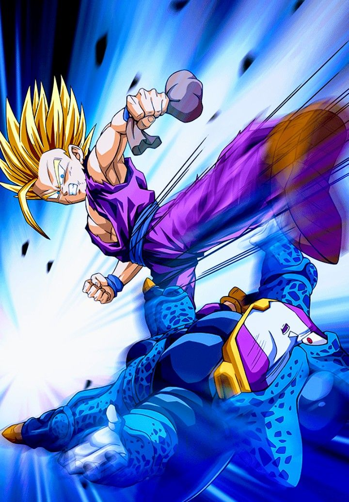

¡Pelear contra Cell!
Gohan, inicialmente reticente y reacio a luchar, enfrenta a Cell con dudas sobre su propia capacidad. Cell, confiado y arrogante, subestima el poder latente de Gohan y lo provoca continuamente.
Durante el combate, Cell crea pequeños Cell Juniors para atacar a los amigos de Gohan, con la esperanza de desencadenar su ira, la crueldad de Cell y el sufrimiento de sus amigos y seres queridos finalmente desencadenan la ira de Gohan, llevándolo a alcanzar el estado de Super Saiyan 2.
Transformado en Super Saiyan 2, Gohan supera ampliamente a Cell en poder y velocidad. Gohan demuestra un control absoluto, devastando a Cell y destruyendo a los Cell Juniors con facilidad
Al verse acorralado, Cell decide autodestruirse para destruir la Tierra junto con sus oponentes..En un acto de sacrificio, Goku se teletransporta con Cell al planeta de Kaio, donde Cell explota, sacrificando su propia vida para salvar a los demás.
Sorprendentemente, Cell regresa a la Tierra más fuerte que antes, gracias a su núcleo regenerativo y la absorción de las habilidades de Goku. A pesar de la nueva amenaza, Gohan, apoyado por el espíritu de su padre, se enfrenta a Cell en una última confrontación decisiva.
Motivado por las palabras de Goku y el apoyo de sus amigos, Gohan libera todo su poder y, con un último esfuerzo, destruye a Cell definitivamente.
-

- 